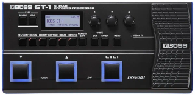
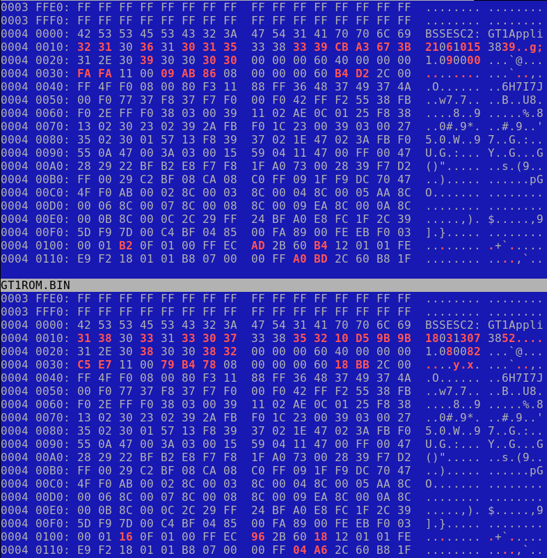
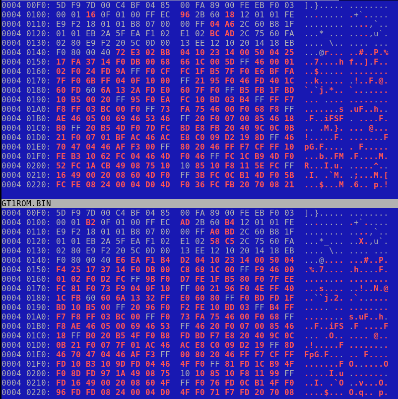

В гитарном процессоре BOSS GT-1 очень короткое время для захвата фразы на встроенном лупере. Всего 32 сек., что зачастую недостаточно. Здесь собираются сведения о возможности изменения прошивки так, чтобы время захвата лупера увеличить.

Получение прошивок
Для понимания, как устроена прошивка, необходимо иметь, как минимум, пару последних прошивок, чтобы была возможность их сравнивать на предмет различий. Тем самым можно примерно понять, где что менялось и понять структуру размещения данных.
Официальная страница для скачивания прошивок:
https://www.boss.info/uk/support/by_product/gt-1/updates_drivers/076a30a8-a319-4891-94e4-ef0bb08451e5/
Кнопка Download File на этой странице вызывает скачивание только самой актуальной прошивки. Где же брать предыдущие? Чтобы это узнать, надо в браузере вызвать инструменты разработчика, и переключиться на вкладку Сеть. При скачивании будет виден запрос, получающий файл:
https://static.roland.com/assets/media/zip/gt1_sys_v109.zip
Соответственно, для скачивания предыдущей версии можно поменять 9 на 8 и получить файл:
https://static.roland.com/assets/media/zip/gt1_sys_v108.zip
Что внутри прошивок?
Внутри прошивок находится два файла:
GT1ROM.BIN размер 4194304 байт
ROMINFO.TXT размер 14 байт
Файлы GT1ROM.BIN имеют абсолютно одинаковый размер.
Файлы ROMINFO.TXT имеют размер 14 и 16 байт. Отличие в том, что в версии 1.08 в конце строки есть символы переноса строки 0x0D 0x0A, а в в версии 1.09 этих символов нет. Содержимое этих файлов совпадает (в текстовом виде), и оно следующее:
0064,0507,4096
На контрольную сумму эти значения не походят, так как одинаковы для двух прошивок. Скорее всего, это какие-то смещения или размеры.
Бинарные файлы прошивки
Файлы GT1ROM.BIN начинаются абсолютно одинаково:
0000 0000: 45 53 43 39 31 2E 30 30 30 00 00 00 AC 0C 00 00 ESC91.00 0.......
0000 0010: 00 00 40 00 06 04 AA 0A 00 00 00 00 10 43 22 34 ..@..... .....C"4
0000 0020: 01 34 00 00 B0 04 00 00 51 11 63 01 FF FF FF FF .4...... Q.c.....
0000 0030: 40 12 01 01 E5 0A 00 01 E9 0A 00 01 EB 0A 00 01 @....... ........
0000 0040: ED 0A 00 01 EF 0A 00 01 F1 0A 00 01 00 00 00 00 ........ ........
0000 0050: 00 00 00 00 00 00 00 00 00 00 00 00 F3 0A 00 01 ........ ........
0000 0060: F5 0A 00 01 00 00 00 00 F7 0A 00 01 D5 05 00 01 ........ ........
0000 0070: FB 0A 00 01 FB 0A 00 01 FB 0A 00 01 FB 0A 00 01 ........ ........
0000 0080: FB 0A 00 01 FB 0A 00 01 FB 0A 00 01 FB 0A 00 01 ........ ........
0000 0090: FB 0A 00 01 FB 0A 00 01 FB 0A 00 01 FB 0A 00 01 ........ ........
...
0000 02C0: FB 0A 00 01 FB 0A 00 01 FB 0A 00 01 FB 0A 00 01 ........ ........
0000 02D0: FB 0A 00 01 FB 0A 00 01 FB 0A 00 01 FB 0A 00 01 ........ ........
0000 02E0: FB 0A 00 01 FB 0A 00 01 FB 0A 00 01 FB 0A 00 01 ........ ........
0000 02F0: DF F8 0C D0 00 F0 74 FC 00 48 00 47 F1 09 00 01 ......t. .H.G....
0000 0300: 00 80 02 01 40 F0 01 00 00 47 00 00 01 B5 BD F8 ....@... .G......
0000 0310: 00 20 C2 F3 03 11 CA 17 01 EB 92 72 92 10 BD F8 . ...... ...r....
0000 0320: 00 30 03 F0 0F 03 02 EB 83 02 23 4B 03 EB 82 00 .0...... ..#K....
0000 0330: BD F8 00 20 C2 F3 03 11 CA 17 01 EB 92 72 92 10 ... .... .....r..
0000 0340: B1 EB 82 02 06 D0 01 2A 0B D0 02 2A 10 D0 03 2A .......* ...*...*
0000 0350: 1C D1 14 E0 9D F8 01 20 01 68 62 F3 07 01 01 60 ....... .hb....`
0000 0360: 15 E0 9D F8 01 20 01 68 62 F3 0F 21 01 60 0E E0 ..... .h b..!.`..
0000 0370: 9D F8 01 20 01 68 62 F3 17 41 01 60 07 E0 9D F8 ... .hb. .A.`....
0000 0380: 01 20 01 68 62 F3 1F 61 01 60 00 E0 00 BF 00 BF . .hb..a .`......
0000 0390: 08 BD 18 B5 04 46 20 88 00 90 05 E0 00 98 FF F7 .....F . ........
0000 03A0: B5 FF A4 1C 20 88 00 90 BD F8 00 00 00 F0 0F 00 .... ... ........
0000 03B0: 0F 28 F3 D1 18 BD 00 00 00 D4 02 40 30 B5 4F F0 .(...... ...@0.O.
0000 03C0: 84 45 05 EB 40 14 04 EB 81 03 1A 60 30 BD 10 B5 .E..@... ...`0...
0000 03D0: 04 46 E2 43 00 21 39 48 FF F7 F0 FF 10 BD 10 B5 .F.C.!9H ........
0000 03E0: 04 46 E2 43 00 21 35 48 30 30 FF F7 E7 FF 10 BD .F.C.!5H 00......
0000 03F0: 10 B5 04 46 E2 43 01 21 30 48 FF F7 DF FF 10 BD ...F.C.! 0H......
Сигнатура ESC91 не гуглится. Непонятно, что за блок данных в самом начале. Вроде похоже на таблицу разделов, но непонятно какую. Надо разбираться.
Файлы GT1ROM.BIN полностью идентичны примерно до адреса 0x2000. Далее идет различие, которое, видимо, представляет собой сигнатуру прошивки:
0000 2000: 42 53 53 45 53 43 32 3A 47 54 31 55 70 64 20 20 BSSESC2: GT1Upd
0000 2010: 31 38 30 33 31 33 30 37 33 38 35 32 10 D5 9B 9B 18031307 3852....
0000 2000: 42 53 53 45 53 43 32 3A 47 54 31 55 70 64 20 20 BSSESC2: GT1Upd
0000 2010: 32 31 30 36 31 30 31 35 33 38 33 39 CB A3 67 3B 21061015 3839..g;
Здесь значение 180313 похоже, означает дату 13.03.2018 - это дата выхода прошивки 1.08 (согласно официальному сайту, MAR 2018), а значение 210610 означает дату 10.06.2021. Однако, это не похоже на DEC 2021 (дата выхода прошивки 1.09).
В любом случае, отличаются байты 0x2010-0x201F. А далее опять идет полное соответствие. Возможно, это не сигнатура прошивки, а контрольная сумма или что-то еще.
Следующее отличие появляется на адресе 0004:0000. Выглядит оно так:

Далее, с адреса 0004:0100 различия выглядят так:

Видно, что были изменены несколько байт, вставлены новые, но затем данные опять совпадают, но со смещением (видно визуально). Даннный блок различий тянется вплоть до адреса 0015:FB39, после чего начинается одинаковый блок, содержащий значения 0xFF. Они тянутся до конца файла, то есть до адреса 003F:FFFF, где файл кончается.
Что нужно найти в прошивке?
Согласно документации, лупер записывает 32 секунды оцифрованного звука. АЦП имеет разрядность 24 бита, то есть 3 байта. Частота дискретизации 44.1 КГц. Поэтому:
3 * 44100 = 132300 байт в сек
132300 * 32 = 4233600 байт для хранения 32 секунд.
Размер в HEX = 0x409980
В версии 1.09 байты 40 99 80 найдены по адресу 000B:8914, и больше нигде не повторяются.
В версии 1.08 таковые байты не найдены.
Пара 40 99 (чтобы увидеть приблизительное число) найдена более 10 раз в обеих версиях.
Возможно надо искать "запись в обратную сторону". Числа 80 99 40 найдены только в версии 1.09 по адресу 000B:EBE4, и на код окружающие байты не походят, скорее какая-то таблица.
Ничего внятного не найдено.
Анализ энтропии в binwalk показывает, что есть один блок 0004:C800 - 000A:8FFF с повышенной энтропией ~0.95, возможно там находится что-то зашифрованное или какая-то оцифровка:
143360 0x23000 Falling entropy edge (0.735705)
313344 0x4C800 Rising entropy edge (0.955652)
323584 0x4F000 Rising entropy edge (0.950192)
688128 0xA8000 Rising entropy edge (0.958937)
720896 0xB0000 Falling entropy edge (0.835694)
Архитектура
Производитель не показывает в характеристиках какой процессор используется. Вряд ли BOSS/Roland будут создавать собственную систему команд для кода общего назначения (не DSP). Поэтому надо понять, какой набор команд используется, самые вероятные кандидаты - ARM и MIPS.
Что удалось выяснить.
Вначале память - используется следующий чип:
Микросхема SDRAM 1M x 16 Bit x 4 Banks
ESMT
M12L64164A
ANM1P000J
7T
1017
А это значит, что в системе используется ОЗУ размером 64Mb.
По поводу CPU - имеется информация что на борту стоит чип:
IC1
MB8AA4181 (ESC2)
Это универсальный чип, который используется в автомобильной электронике, в осветительном оборудовании, в оборудовании связи и в принтерах. То есть, как минимум, это не узкоспециализированный музыкальный чип.
Проверка дампа через утилиту binwalk ничего не дала. Никаких известных сигнатур и опкодов машинного кода не было обнаружено. Возможно, это все-таки закрытая разработка CPU типа Fujitsu RISK или H8.